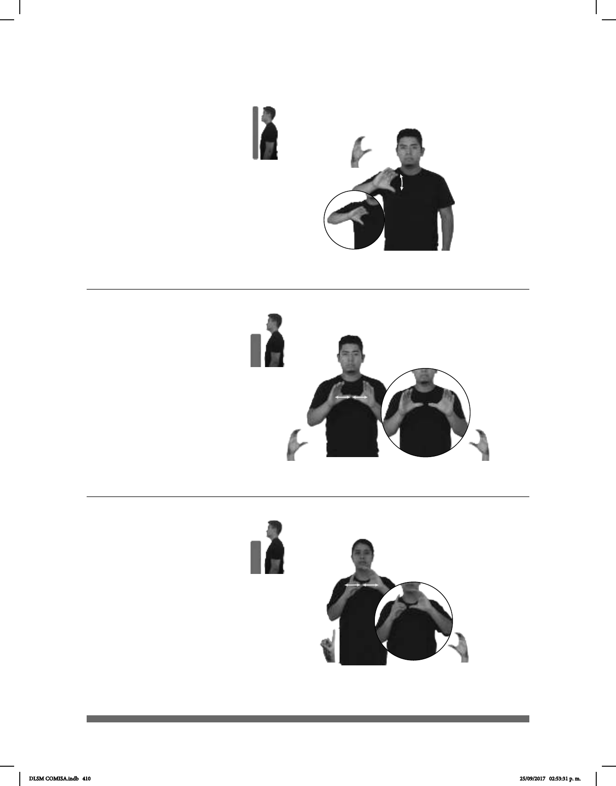

410
Seña: SM
C.1
Palma hacia fuera.
A la altura del pecho.
La mano se agita.
sust. m. Cada una de las
plantas gramíneas de semillas
harinosas, como el trigo, el maíz, el
arroz, la avena, la cebada, el sorgo, etc,
que se utiliza como alimento.
Cereal C-43)
MAÑANA pro-YO CEREAL COMER
Mañana comeré cereal.
Seña: SS
C.1
Palmas hacia afuera.
A la altura del pecho.
Los dedos pulgares
se encuentran y se tocan frente a
frente.
sust. m. Documento
valor legal que se extiende en favor
de alguien para asegurar la verdad o
validez de alguna cosa.
(C-44)
ESCUELA NIÑOS
plural-estatura
CERTIFICADO pro-ELLOS TRAER
(C-45)
Seña: SB
C.1
MD palma hacia la izquierda.
MB palma hacia la derecha.
MD y MB a la altura del cuello.
La MD golpea el pulgar de la
MB en línea recta repetidamente.
(Centro de Estudios
Tecnológicos, Industriales y de
Servicios) Organismo mexicano dedicado a
la educación media superior
perteneciente a la Dirección General de
Educación Tecnológica Industrial (DGETI).
Cuenta con planteles en todos los estados de
México.
pos-MI PRIMO+MUJER CETIS pro-ELLA ESTUDIAR
Mi prima estudia en el CETIS.
DLSM COMISA.indb 410 25/09/2017 02:53:31 p. m.